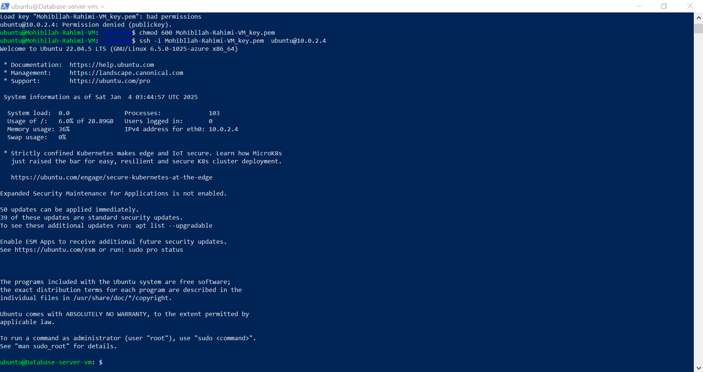

Figure 1: Virtual network configuration with address space 10.0.0.0/16
Figure 1: Virtual network configuration with address space 10.0.0.0/16
This deployment follows a robust network segmentation model, isolating resources across subnets for enhanced security and manageability:

Figure 2: Private subnet 10.0.2.0/24 configuration
NSGs enforce the principle of least privilege, strictly controlling inbound and outbound traffic:

Outbound internet access for private VMs is routed via a NAT Gateway, which enhances both security and control:

The MySQL server was provisioned in the private subnet with performance and security in mind:

Figure 3: Database server specifications

Figure 4: MySQL installation process
# MySQL secure installation sudo mysql_secure_installation # Removed anonymous users # Disabled remote root login # Removed test database # Application-specific user creation CREATE USER 'ownclouduser'@'10.0.1.%' IDENTIFIED BY 'ComplexP@ssw0rd!2025'; GRANT SELECT, INSERT, UPDATE, DELETE ON owncloud.* TO 'ownclouduser'@'10.0.1.%'; REVOKE ALL PRIVILEGES ON *.* FROM 'ownclouduser'@'10.0.1.%';
Access to backend servers is tightly secured through a bastion host and key-based SSH authentication:
